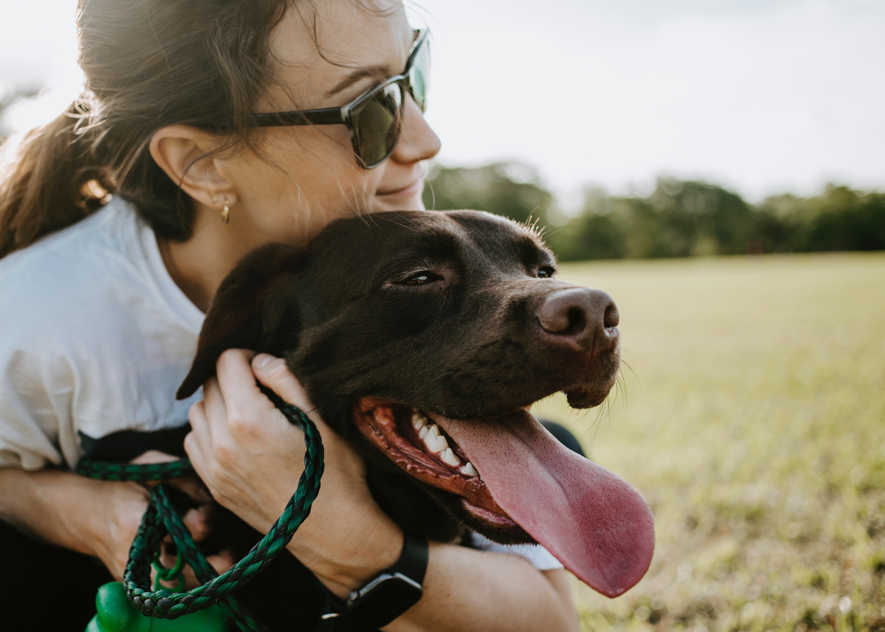

Nossa história
A nossa hostória começa em 2014 com a Luana que ajudava animais de rua de forma independente. Em 2016 ela fundou a ONG Adocão com o dinheiro de uma vaquinha online. A ONG atuou por 3 anos no centro de Osaco. A Adocão teve problemas em manter os custos com o lacal e quando achavamos que tudo teria acabado, recebemos a doação de um terreno no centro de SP.
Hoje contamos com 30 colaboradores voluntários e abrigamos mais de 200 animais de rua. Nesses 7 anos de atuação já ajudamos mais de 2 mil animais a acharem um lar feliz.